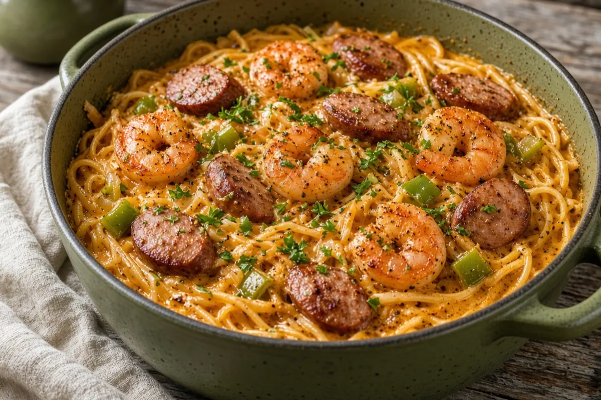

One-Pot Cajun Shrimp and Sausage Pasta
Linguine tossed with Cajun butter shrimp, smoky kielbasa, onion, and green pepper in a quick creamy Cajun sauce, all in one pot.

Adapted from keyingredient.com
4 servings
By
Yield: 4 servings
Prep:
Cook:
Total:
Difficulty: Easy
Ingredients
- 1 lb linguine
- 3 Tbsp butter, divided
- 2 1/2 Tbsp Cajun seasoning, divided
- 1 lb large shrimp, peeled and deveined
- 1/2 cup diced yellow onion
- 1/2 cup diced green pepper
- 1 lb kielbasa sausage, sliced
- 2 cloves garlic, minced
- 2 tsp red pepper flakes
- 1 tsp dried thyme
- 1/2 cup chicken stock
- 1/2 cup heavy cream
- Chopped parsley, for garnish
Instructions
- Cook the linguine in a large pot of boiling water until al dente, about 10 minutes. Drain and set aside.
- In the same pot over medium-high heat, melt half the butter and stir in 3/4 Tbsp of the Cajun seasoning. Add the shrimp and cook until pink, about 3 minutes. Move the shrimp to a plate.
- Melt the rest of the butter in the pot, add the onion and green pepper, and cook until the onion is translucent, about 4 minutes.
- Add the kielbasa and cook 1 minute, then stir in the garlic, the rest of the Cajun seasoning, the red pepper flakes, and the thyme.
- Pour in the chicken stock and heavy cream, stir well, and simmer 3 minutes, until it starts to thicken.
- Return the shrimp and linguine to the pot and toss until coated. Sprinkle with parsley and serve.
Notes: AnyList showed this doubled; amounts are back at 1x. Two teaspoons of red pepper flakes is hot; start with 1 if you want it milder. Andouille is a great swap for the kielbasa.